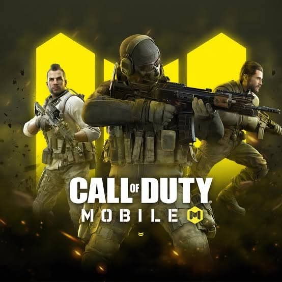
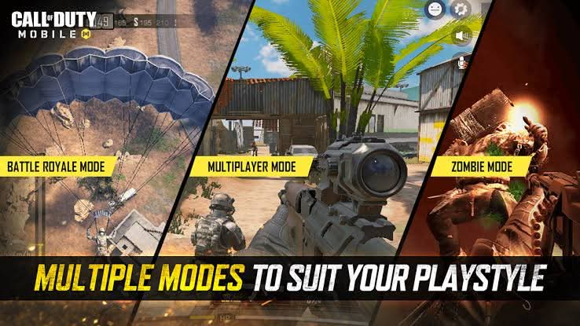

Call of Duty: Mobile is a popular first-person shooter game developed by Activision. It was released in 2019 and quickly became one of the most downloaded games worldwide. It offers intense action, smooth controls, and high-quality graphics. The game is played by millions of players all over the world every day. It allows players to team up with friends or compete against others online. Players can choose different characters, weapons, and playstyles depending on their strategy. The game constantly updates with new seasons, maps, and special events to keep it exciting. Many players enjoy it because it improves their aiming skills, reflexes, and teamwork ability. Overall, Call of Duty: Mobile is one of the most exciting and competitive mobile games today.
Players can use different weapons such as rifles, snipers, shotguns, and SMGs. The game allows full customization of loadouts, operators, and weapon skins. It also features different maps that give unique gameplay experiences. Players can join seasonal events that introduce new rewards and challenges. The game has smooth controls, making it easy for both beginners and skilled players.



I like Call of Duty: Mobile because it is fun, exciting, and competitive. It gives me a chance to play with my friends and communicate as a team. I enjoy improving my skills, especially aiming and strategy during matches. The game also helps me relax and have fun after a long day. Every match feels different, which makes the game more interesting and enjoyable.